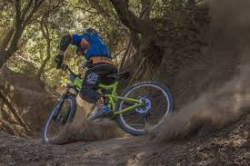
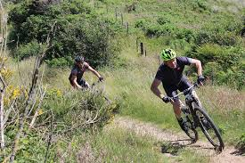
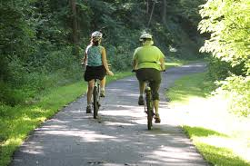

Come Adventure With Us!
Want to get away from the stress of every-day life? We offer outdoor bike tours for all types of riders! Check out our all-inclusive bike tours below!
For Experienced Mountain Bikers
 Been biking for a while? Come with us to the Black Diamond rated Chestnut Mountain to enjoy 13 miles of mountainous trails that are perfect for those with previous mountin biking experience.
For Those With Moderate Biking Experience
 Want to be able to enjoy the scenery of mountian biking without having to climb steep slopes? Come check out our intermediate tour where those who like to see the beautiful scenic route won't regret the ride!
For The Afternoon Rollers
 This extravaganza is made for anybody who knows how to ride any bike! We'll take you through the valley trail with sights worth seeing. Great for families wanting to spend some quality time and have a bit of fun!